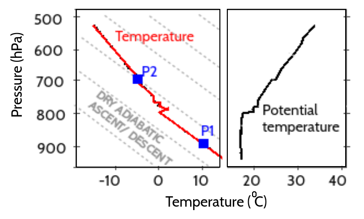
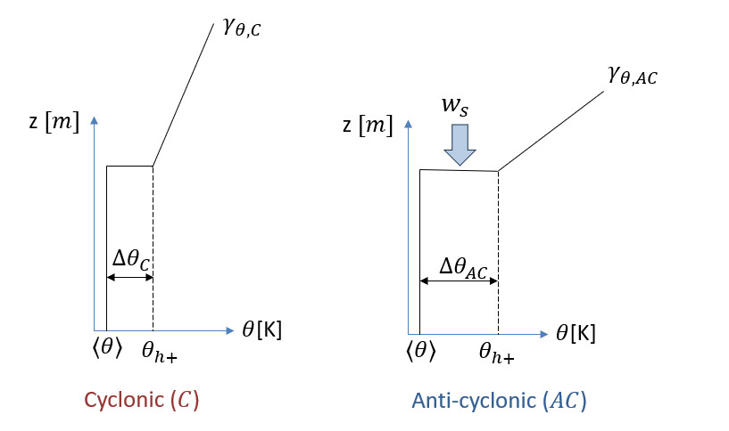
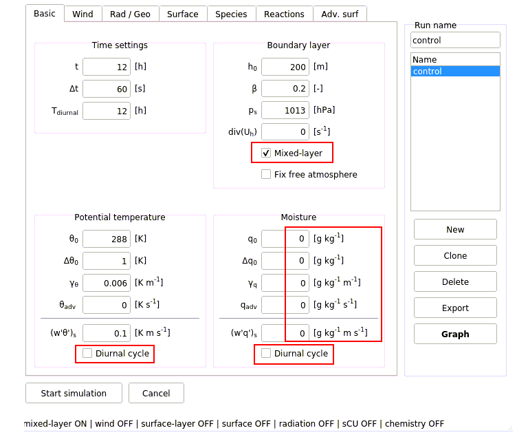

flowchart TD
A(["$$\frac{\partial h}{\partial t}$$"])
B["$$\Delta \theta$$"]
C["$$\gamma_{\theta}$$"]
D["$$|w_s|$$"]
E(["$$\frac{\partial \langle \theta \rangle}{\partial t}$$"])
A ~~~ B & C & D
B & C & D ~~~ E
classDef largeFontSize font-size:22px;
class A,B,C,D,E largeFontSize;
1 Practical 1: Atmospheric state and forcings
Before conducting experiments with CLASS, you are first tasked to perform some introductory analysis on ABL theory.
1.1 Problem 1: Observed atmospheric temperature profile
The left panel of Figure 1.1 illustrates a typical observed atmospheric temperature profile (red line) during the day with a well-mixed boundary layer formed as a result of daytime turbulent mixing. In the mixed ABL the temperature profile is nearly dry adiabatic, i.e. it closely follows the dry adiabatic lapse rate \(\Gamma_D \approx -10\) K/km (see Theory L2.5). The ABL top is capped with a strong temperature inversion (increase of T with height).

1.1.1 Task A
Find the temperature inversion on Figure 1.1 below (left panel) and note down in the Table 1.1 the height (in pressure) of the ABL top and the absolute temperature (in Kelvin) corresponding to that ABL height. Also, identify the pressure and absolute temperature for the two air parcels, P1 and P2. Note, that in absolute terms, temperature in the atmosphere decreases with height, i.e \(T_2 < T_{top,ABL} < T_1\).
Based on the right pane of Figure 1.1, also fill in the potential temperature in the third column of Table 1.1
| | \(P\): Pressure [hPa] | \(T\): Absolute temperature [K] | \(\theta\): Potential temperature read [K] | \(\theta\): Potential temperature calculated [K] |
|---|---|---|---|---|
| top, ABL | | | ||
| Parcel P1 | | | ||
| Parcel P2 | | |
1.2 Problem 2
The concept of potential temperature takes into account effects of compression or expansion on air parcel’s temperature, and hence, allows for a comparison of a parcel’s buoyancy at any height. Use Equation 1.1 to calculate potential temperatures of the two parcels (P1 and P2) and the ABL top.
\[ \theta = T \left( \frac{p_0}{p} \right)^{R_d/c_p} \tag{1.1}\]
Note that \(p_0\) is the reference surface pressure of 1000 hPa, \(R_d = R/MW_{\text{dry,air}} = \frac{8.314 \text{ J/(K mol)}}{29e-3 \text{ kg/mol}} \approx 287 \text{ J/(K kg)}\) the gas constant of dry air and \(c_p = 1013 \text{ J/(K kg)}\) the specific heat of dry air at constant pressure. For the derivation of Equation 1.1, the reader is referred to the supplementary material of Theory L2, more specifically to the section Vertical pressure and temperature gradients of Shuttleworh (2012).
Complete the fourth column of Table 1.1 with the three calculated \(\theta\) values: at ABL height, and at parcels’ levels P1 and P2.
1.2.1 Task A
Now, imagine that you (dry adiabatically) descend parcels P1 and P2 down to the same level, for example the surface. Using the notion and formula of potential temperature, answer the question: which parcel will be warmer and more buoyant, P1 or P2?
1.2.2 Task B
Compare your findings with the profile of potential temperature in the right hand side of Figure 1.1. Explain now in your own words why it is said that the entrainment flux transports warmer air from the free troposphere (i.e. P2) down to the mixed ABL, even though absolute temperatures of free troposphere are colder than those of the ABL (i.e. \(T_2 < T_{top,ABL} < T_1\))?
1.3 Problem 3
Surface turbulent fluxes, \((\overline{w'\theta'})_s\) and \((\overline{w'q'})_s\), are called eddy-covariance fluxes, because they can be estimated as the amount of common variation between temperature and vertical velocity for the surface heat flux \((\overline{w'\theta'})_s\) or between humidity and vertical velocity for the surface moisture flux \((\overline{w'q'})_s\).
Remember that for a generic turbulent variable \(\psi\), Reynolds decomposition yields \[ \psi = \text{E}[\psi] + \psi' = \overline{\psi} + \psi' \]
with \(\text{E}[\psi] = \overline{\psi}\) the averaged value and \(\psi'\) the random fluctuating part. In addition with the assumption of no mean vertical wind velocity (\(\bar{w} = 0\), see introductory slides), it follows that:
\[ \begin{split} \text{cov} [w \psi] = E[(w - \text{E}[w])(\psi - \text{E}[\psi])] \\ = E[w'\psi'] = \overline{w'\psi'} \end{split} \]
1.3.1 Task A
Using measurements from an eddy-covariance sensor given in the Excel file pract1_eddy_cov_data.xls, calculate surface sensible (\(H\)) and latent heat (\(λE\)) fluxes. Note that latent and sensible heat fluxes are related to the eddy-covariance fluxes by the following relationship (see Theory L3.4):
\[ \begin{split} H = \rho c_p (\overline{w'\theta'})_s \\ \lambda E = \rho \lambda (\overline{w'q'})_s \end{split} \]
where \(\rho = 1.2\) kg/m\(^3\) is the air density and \(\lambda = 2.45e6\) J/kg the latent heat of vaporisation.
Tip
Use a programming language of your choice to perform the analysis.
1.4 Description of the changes in large-scale atmospheric forcing
With the introductory analysis performed, it is now time to carry out sensitivity experiments with CLASS. For more information on how to use the graphical user interface of CLASS, see CLASS_model_guide.pdf. The model parameters are set to be representative of a site in the mid-latitude (approximately 50°N).
As mentioned in the introductory slides, the goal of this practical is to explore what effect the changing synoptic situation over Central Europe, from cyclonic (\(C\), low pressure) to anti-cyclonic (\(AC\), high pressure) – typical for a drought onset conditions - has on the evolution of the ABL state during the day, primarily its (potential) temperature (\(\theta\)) and height (\(h\)).
Table 1.2 and Figure 1.2 summarise the change that have occurred in the large-scale atmospheric forcing parameters in the free troposphere: ABL jump (inversion) (\(\Delta \theta\) [K]), free tropospheric lapse rate (\(\gamma_{\theta}\) [K/m]) and horizontal wind divergence ( \(\nabla \cdot \mathbf{u}_h\) [1/s]).
| \(\Delta \theta\): ABL jump (inversion) [K] | \(\gamma_{\theta}\): Free tropospheric lapse rate [K/m] | \(\nabla \cdot \mathbf{u}_h\): Horizontal wind divergence [1/s] | |
|---|---|---|---|
| Cyclonic (\(C\)) | 1.0 | 0.001 | 0 |
| Anti-cyclonic (\(AC\)) | 4.0 | 0.009 | 1e-5 |

Before moving to the problems, the three considered governing equations as given in the introductory slides are repeated: \[ \frac{\partial\left\langle\theta\right\rangle}{\partial t}=\frac{\left(\overline{w^\prime\theta^\prime}\right)_s-\left(\overline{w^\prime\theta^\prime}\right)_e}{h} \tag{1.2}\]
\[ \frac{\partial h}{\partial t}= -\frac{(\overline{w'\theta'})_e}{\Delta \theta} + w_{s}=w_{e} + w_{s} \tag{1.3}\]
\[ \frac{\partial\Delta\theta}{\partial t}=w_{e}\gamma_{\theta}-\frac{\partial\langle\theta\rangle}{\partial t}=\gamma_{\theta}\left(\frac{\partial h}{\partial t}-w_{s}\right)-\frac{\partial\langle\theta\rangle}{\partial t} \tag{1.4}\]
When writing down your answers to the problems, please use the equation numbers used above (Equation 1.2, Equation 1.3 and Equation 1.4) to support your reasoning.
1.5 Problem 4
Start from investigating the influence of a stronger morning contrast between the cooler ABL and warmer free troposphere, i.e. larger morning inversion (\(\Delta \theta(t_0) = \Delta \theta_0\)). Note that there is a physical explanation for this larger morning inversion: in anti-cyclonic conditions, clear sky nights typically occur, which results in more cooling (via longwave outgoing radiation) during the night.
Open the interactive window of CLASS model with its initial default set up. Under tab ´Basic´ make sure that only the mixed-layer module is activated; the diurnal cycle of surface fluxes is off, and all the moisture parameters (i.e. \(q\), \(\Delta q\), \(\gamma_q\), \(q_{adv}\) and \((\overline{w'q'})_s\)) are set to zero for now. See the screen-shot in Figure 1.3. This setup is your control experiment.

Now set up two sensitivity experiments: one for a weak initial nocturnal inversion (experiment \(WI\) with the inversion value \(\Delta \theta_C\)) and one for a strong initial nocturnal inversion (experiment \(SI\) with the inversion value \(\Delta \theta_{AC}\)). Use the values from Table 1.2.
Set up and run both experiments. Use the Graph option in the interactive window to plot and compare the results for the temporal evolution of \(h\), \(\langle \theta \rangle\) and \(\Delta \theta\).
1.5.1 Task A
By analysing the evolution of \(\Delta \theta\), find at which time step (\(t_i\)) \(\Delta \theta\) starts increasing in the experiments. Describe the differences in the growth rate of \(h\) and \(\langle \theta \rangle\) before and after this time \(t_i\) for both experiments. Use Equation 1.3 and Equation 1.2 to support your discussion.
Tip
Save plots in the Graph interface in order to compare the temporal evolution of ABL variables against each other. Also include the plots later on in your report.
1.5.2 Task B
Do you have a guess on why \(\Delta \theta\) is first decreasing, and then starts increasing? Support your discussion with the dependencies between the variables given by Equation 1.4.
Tip
Exploring vertical profiles of \(\langle \theta \rangle\) in Graph interface may help you find the answer.
1.5.3 Task C
Summarise your conclusions about the influence of the larger morning temperature inversion on the evolution of the daytime ABL properties and fill out the feedback diagram in Figure 1.4 below. Use solid lines with arrows to indicate positive relationships between any two variables, and dashed lines with arrows to show negative relationships. To clarify:
- Positive relationship between A and B: increase in A leads to increase in
- Negative relationship between A and B: decrease in A leads to increase in B
Tip
Look at the 3 main state equations to support the arrows you draw.
1.6 Problem 5
Another important variable that changed with the onset of the high pressure system (\(AC\)) was \(\gamma_\theta\). Under conditions characterized by a high pressure system, warm air is slowly transported downward by subsidence, increasing the stability of the free troposphere, i.e. resulting in larger values of \(\gamma_\theta\).
Using this knowledge, design two experiments to study the influence of larger free-tropospheric lapse rate (higher stability). Using the values provided in Table 1.2, consider conditions before the onset of an anticyclonic situation (experiment \(LO\) with \(\gamma_{\theta,C}\)) and another after the onset of a persistent high pressure system (experiment \(HI\) \(\gamma_{\theta, AC}\)). For the rest, use the same initial set up as in Section 1.5, i.e. no moisture in the ABL and no diurnal cycle for both fluxes. Perform the simulations and compare the evolution of \(h\), \(\langle \theta \rangle\), and \(\Delta \theta\) for the two experiments.
1.6.1 Task A
Using Equation 1.2, Equation 1.3 and Equation 1.4 to support your discussion, analyze the role of \(\gamma_\theta\) in the boundary layer growth and temperature evolution.
Tip
Study vertical profiles in `Graph´ interface for easier interpretation.
1.6.2 Task B
Does the effect of stronger morning inversion \(\Delta \theta_0\) (from Section 1.5), and larger \(\gamma_\theta\) (this exercise), act at similar or different time periods of the day on the evolution of \(h\) and \(\langle \theta \rangle\)?
1.6.3 Task C
Summarize the role of \(\Delta \theta\) and \(\gamma_\theta\) as capping (limiting) factors of the diurnal evolution of the boundary layer. Add these newly identified relationships into the feedback diagram in Figure 1.4.
1.7 Problem 6
Analogously to the experiments in Section 1.5 and Section 1.6, explore the sensitivity of the ABL evolution to the strong large-scale atmospheric subsidence \(w_s\) developed under high-pressure system (see Figure 1.2). Remember from the introductory slides that \(w_s = (\nabla \cdot \mathbf{u}_h) h\).
Again starting from Figure 1.3, set up two experiments: one with zero wind divergence, and another with the divergence given in Table 1.2 for \(AC\). As before, support your answers below with the main state equations.
1.7.1 Task A
Compare the boundary layer characteristics (\(\langle \theta \rangle\), \(h\) and \(\Delta \theta\)) in the situation with and without subsidence.
1.7.2 Task B
Summarize the effect of subsidence and complete the feedback diagram in Figure 1.4.
1.8 Summary
In this first practical, you have investigated the change in large-scale synoptic situation from a cyclonic to anti-cyclonic one, which - if the high pressure system persists - will likely cause a multi-day drought. You identified three main large-scale atmospheric forcing parameters: subsidence (\(w_s\)), inversion (\(\Delta \theta\)) and atmospheric stability (as determined by \(\gamma_\theta\)), which have changed alongside the onset of the high pressure system. These factors will definitely influence daytime dynamics of the ABL, and in the long run, rainfall occurrence, surface water availability, temperature peaks and ecosystem productivity.
Examine one more time the feedback diagram (Figure 1.4) you worked upon, and summarize the expected change in the ABL dynamics due to the established large-scale synoptic situation.
1.8.1 Task A
What is the common effect of the changed large-scale forcing conditions on ABL growth? And on temperature?
1.8.2 Task B
We did not look specifically into the effect of clear sky conditions (typical for anti-cyclone) versus cloudy weather (typical for cyclone) on the evolution of the ABL height and temperature. Do you expect the change to a clear sky conditions to have a positive or negative effect on ABL growth and temperature? Why?